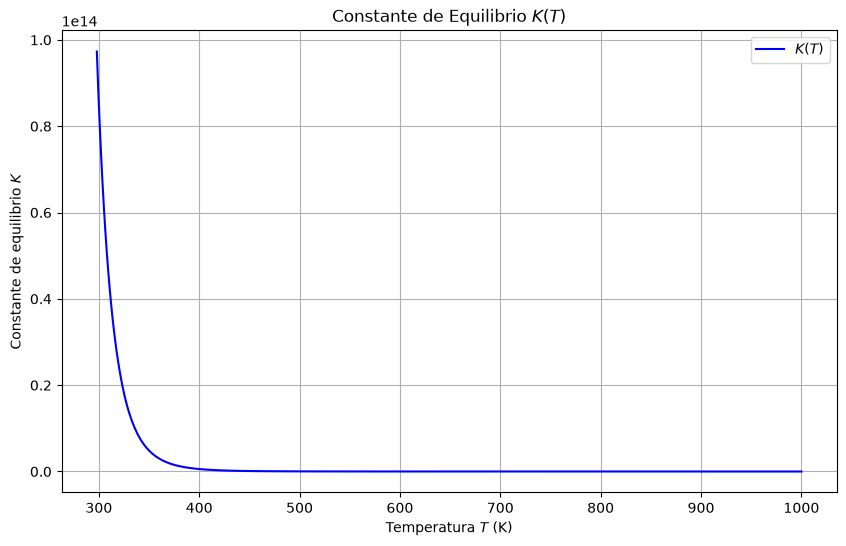

Cálculo de la Constante de Equilibrio#
ADVERTENCIA
Esto es una propuesta y todavía tiene que editarse
Contexto Teórico
La constante de equilibrio \( K \) de una reacción química está relacionada con la energía libre de Gibbs estándar \( \Delta G^\circ \) por la ecuación:
Donde:
\( R \): Constante de los gases (\( 8.314 \, \text{J/mol·K} \)).
\( T \): Temperatura absoluta.
La energía libre de Gibbs \( G(T) \) de un sistema puede expresarse como:
Donde:
\( H(T) \): Entalpía.
\( S(T) \): Entropía.
Enunciado
Para una reacción química, la entalpía estándar \( \Delta H^\circ \) y la entropía estándar \( \Delta S^\circ \) son constantes en un rango de temperaturas. Si \( \Delta H^\circ = -50 \, \text{kJ/mol} \) y \( \Delta S^\circ = 0.1 \, \text{kJ/mol·K} \), calcular la constante de equilibrio \( K \) a \( T = 298 \, \text{K} \) y \( T = 500 \, \text{K} \).
Graficar \( K(T) \) en el rango \( T = [298, 1000] \, \text{K} \) y analizar su comportamiento.
Interpretar físicamente:
¿Cómo afecta la temperatura a la constante de equilibrio \( K \)?
¿Qué sugiere el signo de \( \Delta H^\circ \) y \( \Delta S^\circ \) sobre la espontaneidad de la reacción?
Solución
Cálculo de \( K \) a Diferentes Temperaturas Usamos la ecuación:
A \( T = 298 \, \text{K} \):
A \( T = 500 \, \text{K} \):
Resultados:
import numpy as np
import matplotlib.pyplot as plt
# Parámetros
Delta_H = -50e3 # J/mol (entalpía estándar)
Delta_S = 0.1e3 # J/mol·K (entropía estándar)
R = 8.314 # J/mol·K
# Rango de temperaturas
T = np.linspace(298, 1000, 500)
# ln K(T)
ln_K = -Delta_H / (R * T) + Delta_S / R
# K(T)
K = np.exp(ln_K)
# Gráfica
plt.figure(figsize=(10, 6))
plt.plot(T, K, label="$K(T)$", color="blue")
plt.xlabel("Temperatura $T$ (K)")
plt.ylabel("Constante de equilibrio $K$")
plt.title("Constante de Equilibrio $K(T)$")
plt.legend()
plt.grid(True)
plt.show()
